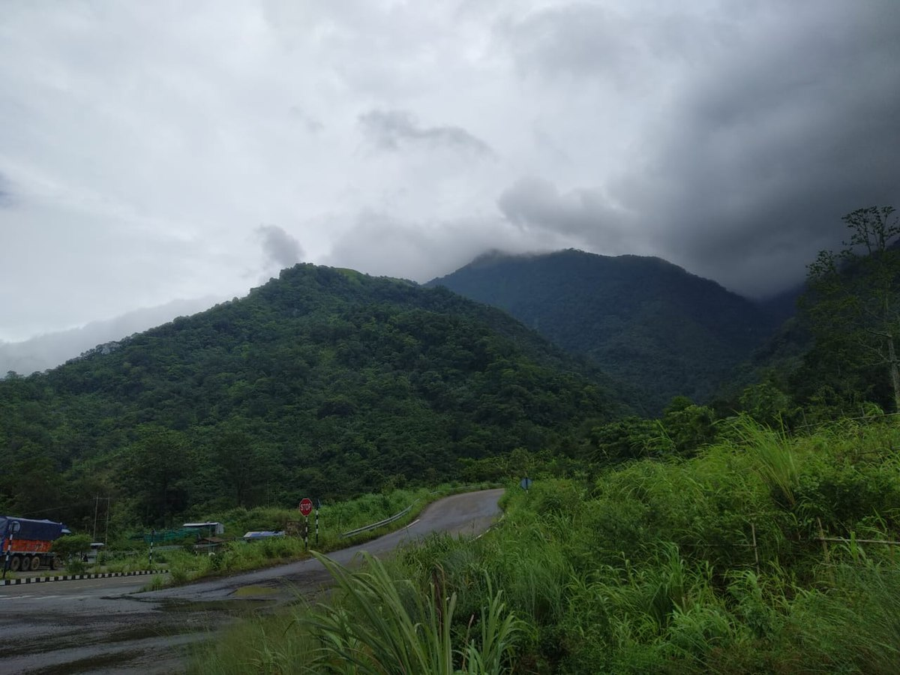

Dima Hasao, formerly known as North Cachar Hills, is one of the most beautiful and geographically significant districts of Assam, situated in the northeastern part of India.
It is widely known for its green hills, beautiful valleys, dense forests, rivers, waterfalls, rich cultural heritage, and peaceful natural surroundings.
The district is an important part of Assam's natural and cultural identity and has considerable potential for tourism development.
Its unique combination of natural beauty, traditional lifestyles, historical significance, and ethnic diversity makes it an attractive destination for nature lovers, researchers, adventure seekers, and tourists.
The name Dima Hasao is associated with the Dimasa people and their traditional homeland.
The district represents a landscape where nature and culture exist in close harmony.
Unlike the busy urban centres of Assam, many parts of Dima Hasao retain a peaceful atmosphere, with green mountain ranges, small villages, winding roads, and scenic viewpoints.
The district offers visitors an opportunity to experience the beauty of the hills and understand the traditional ways of life of the indigenous communities.
|
|
 |
|
| Next >> |